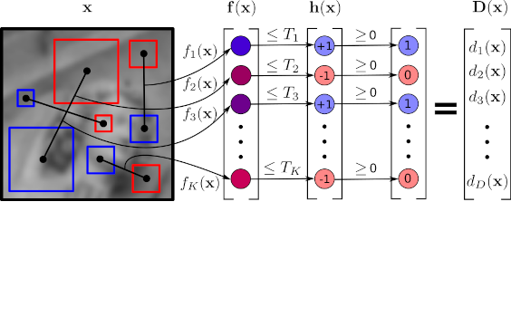
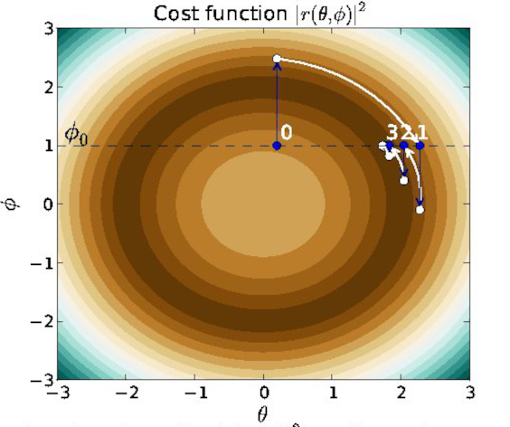
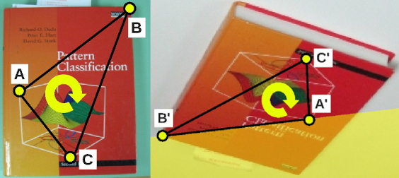
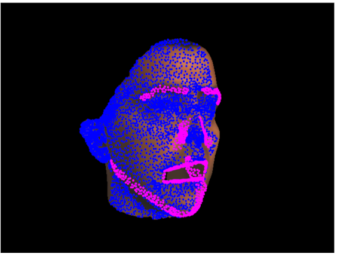
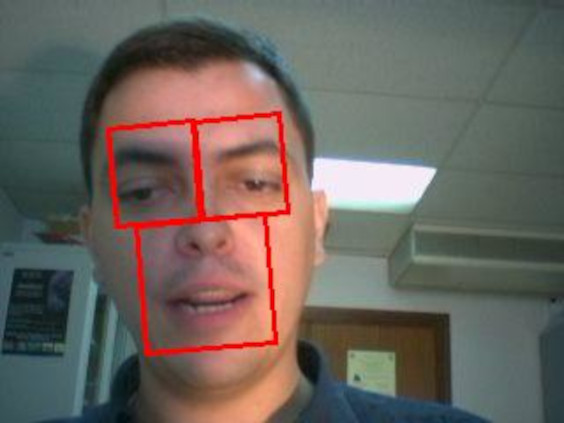
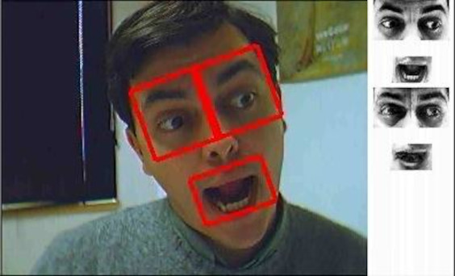
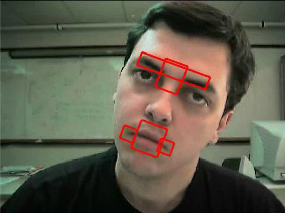
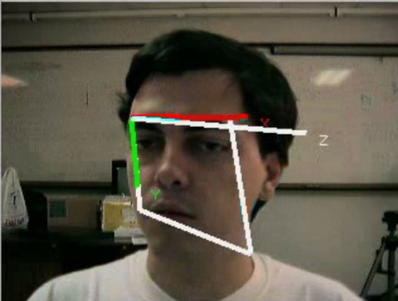
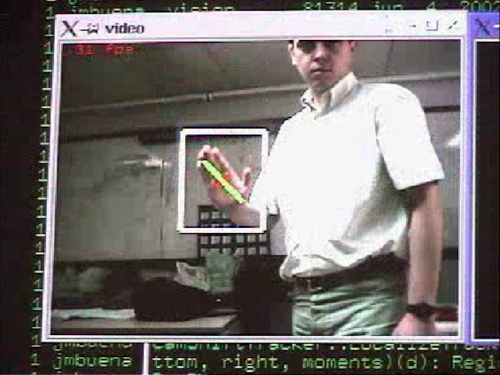
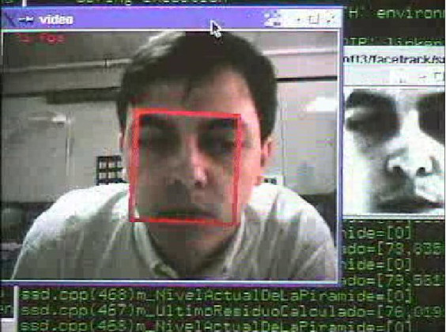

Image Alignment
 Wide-range 3D head pose estimation.
Wide-range 3D head pose estimation.Recent applications require the analysis of faces in the full 360◦ rotation range. We analyze the methodology for short- and wide-range HPE and discuss which representations and metrics are adequate for each case. We show that the popular Euler angles representation is a good choice for short-range HPE, but not at extreme rotations. However, the Euler angles’ gimbal lock problem prevents them from being used as a valid metric in any setting. We introduce a procedure to quantify the misalignment between the reference systems of the training and test data sets and a new methodology for cross-data set HPE that establishes new, more accurate, SOTA for the 300W-LP/Biwi benchmark. We propose a generalization of the geodesic angular distance metric that enables the construction of a loss that controls the contribution of each training sample to the optimization of the model. We also introduce a wide range HPE benchmark based on the CMU Panoptic data set. Related Publications: PR'2024 |
 Multi-task 3D pose estimation.
Multi-task 3D pose estimation.We study the problem of multi-task 3D head pose estimation. By using the landmarks localization and visibility estimation as an auxiliary task we are able to get top performance in 3D head pose estimation in BIWI (MNN) and AFLW2000-3D (MNN). As we use a multi-task approach we are able get top performance in landmarks visibility estimation in COFW and 3D landmarks projection localization in AFLW2000-3D (MNN+OR). In a follow up work, SPIGA, we use Graph Attention Networks (GATs) with learned relative positional encodng to improve results in landmarks and 3D pose estimation. Related Publications: PAMI'2021, BMVC'2022 Some videos [VIDEO1] |
|

Efficient local image descriptors. We have developed very efficient local image descriptors, BEBLID (Boosted Efficient Binary Local Image Descriptor) and TEBLID (Triplet-based Efficient Binary Local Image Descriptor), that can compute all the descriptors within an image in a few milliseconds using a smartphone CPU. In BEBLID we have learned with AdaBoost the best set of measures from a pool of several thousands. Each measure consists of the difference of the average grey levels of two square boxes. The computation is fast because we use an integral image to compute the grey level average of a square box. We train our descriptor taking into account the unbalance nature of the matching process and we get very good results in HPatches. In TEBLID we improved the BEBLID descriptor by using the triplet loss and other tricks developed in the Deep Learning based descriptors but using the same very efficient local features. Related Publications: IbPRIA'2019, PRL'2020, RAL'2021 Code: BEBLID GitHub, BEBLID OpenCV, TEBLID GitHub, TEBLID OpenCV, |
|

Rationalizing efficient compositional image alignment. We study the issue of computational efficiency for Gauss-Newton (GN) non-linear least-squares optimization in the context of image alignment. We introduce the Constant Jacobian Gauss-Newton optimization, a GN scheme with constant Jacobian and Hessian matrices. We prove that the Inverse Compositional image alignment algorithm is an instance of this scheme. We also prove that the forward and inverse compositional algorithms are not equivalent. Related Publications: IJCV'2015, |
|

Speeding-up homography estimation in mobile devices. We introduce a procedure for reducing the number of samples required for fitting a homography to a set of noisy correspondences using a random sampling method. This is achieved by means of a geometric constraint that detects invalid minimal sets. Related Publications: JRTIP'2015, |
|

Efficient 3d nonrigid tracking. Efficient incremental image alignment is a topic of renewed interest in the computer vision community because of its applications in model fitting and model-based object tracking. We are working in efficient solutions to the 3D tracking of a head performing face expressions under changing illumination conditions. Related Publications: VIE'2005, ICCV'2005 ICCV'2009 Some videos: [Video 1] [Video 2] [Video3 (youtube)], [Video4 (youtube)] |
|

Efficient appearance-based tracking with illumination changes and face expressions. separates facial expressions from illumination variations. The appearance of a face is represented by the addition of two independent linear subspaces modelling facial expressions and illumination. This simple model enables us to train the system with no manual intervention. We also introduce an efficient procedure for fitting this model, which can be used for tracking a human face in real-time. Related Publications: BMVC'2006, ICPR'2006, IVC'2009 Some videos: [Video 1], [Video 2], [Video 3], [Video 4] You can download the original sequences used in our tests (BMVC 2006 paper image sequences). |
|

Efficient appearance-based tracking We have developed an efficient way of minimizing the eigentracking for nonrigid motion estimation. It is based on the precomputation of motion templates to save on-line computation. It allows as to estimate appearance (PCA coefficients) and motion in real-time. Related Publications: ANM'2004 Some videos: [Video 1] |
|

SSD based 3D tracking. We have developed an algorithm for tracking a rigid object based on a piecewise planar model. The tracking is performed using a single incremental SSD-based tracker. The main feature of the approach presented is that it can track a rigid set of arbitrarily small patches all of which could not be individually tracked. Related Publications: IbPRIA'2003, VLBV'2003 Some videos (mpeg): [Video 1], [Video 2] |
|

SSD based tracking. Planar tracking can be used for face tracking. We have extended a well known framework for planar tracking (see [Hager98]) with a projective motion model. Additionally, using a calibrated camera, it is possible to estimate the 3D pose of the planar object. We have also developed a procedure to select the most informative pixels of the target template image for faster tracking. Related Publications: ICPR'2002, ICIP'2002 Some videos (mpeg): [Video 1], [Video 2] |
|
Colour Based Tracking.  Tracking using colour is difficult when sudden light colour changes take place. We have extented a well known colour constancy algorithm, Grey World, to deal with such situations. The result is more robust than widely used RGB-normalisation, although it is not perfect either. Related Publications: CAIP'2001, Some videos (mpeg): [ light colour change], [RGB-normalised], [DGW]. |
|

Robust face tracking. All the algorithms based on a simple visual cues fail in some circumstances. The key idea is to use this simple algorithms together in order to get robustness. All this algorithms should be "orthogonal" in the sense of having different fail conditions. Some videos (mpeg): Colour and SSD tracking |